2026년 11월 20일(금) – 22일(일). 금요일 밤 22:10 훙차오 도착, 일요일 17:00 훙차오 출발. 실제로 쓸 수 있는 시간은 토요일 하루와 일요일 오전. 숙소 IFC(루자쭈이)를 기점으로 1–3회차에서 본 것들을 세 코스, 25 정거장에 펼친다. 모두 볼 수는 없으니, 핵심만.
분량 60분 강의 / 실제 토 12h + 일 5h형식 코스 A 10 + B 9 + C 6 정거장전제 1–3회차 권장
00
투어 개관 — 강을 두 번 건너는 2박 3일
5분
이번 여행의 뼈대는 1회차의 한 문장이다 — "한쪽 강변은 1920년대, 다른 쪽은 2020년대." 숙소는 2020년대 쪽(푸동 루자쭈이)에 있다. 토요일엔 강 밑을 지나 1920년대 쪽(푸시)으로 건너가 하루 종일 걷고, 밤에 돌아온다. 일요일 오전엔 숙소 주변의 2020년대를 걷고 공항으로 간다.
코스 A — 와이탄과 위위안 (토 오전)
2호선 한 정거장으로 강을 건너 난징동루에서 시작. 와이탄 제방을 따라 조계의 은행 거리를 걷고, 바로 뒷골목의 상하이 그랜드마더(上海姥姥)에서 본방채 점심. 옛 현성으로 들어가 난샹 샤오롱바오 한 판과 위위안. 1·2회차의 공동조계와 옛 현성.
코스 B — 옛 프랑스 조계 (토 오후·밤)
10호선 두 정거장으로 신천지. 임시정부 청사에서 시작해 석고문 골목과 플라타너스 길을 걷고, 헌지우이치엔(很久以前) 양꼬치로 저녁. 마지막은 숙소 건물 58층 Flair 루프톱에서 불 켜진 와이탄을 내려다보며 닫는다. 2회차 Beat 2–4의 무대.
코스 C — 루자쭈이 (일 오전)
숙소 문 앞에서 시작해 숙소로 돌아오는 3km. 원형 육교, 강변에서 본 와이탄, 개발 전의 벽돌집, 상하이타워 118층. 1회차 Beat 4의 35년. 점심 후 공항으로.
일 11:45–13:45 IFC 점심 · 체크아웃 → 13:45 공항 출발 → 15:00 T1 도착 → 17:00 출국
출발 전 체크리스트
편한 신발 — 토요일 하루 도보 약 9km.
겉옷 + 접이식 우산 — 11월 하순 상하이는 8–15°C, 습하고 비가 잦다. 밤 강변은 바람이 차다.
여권 — 위위안·임시정부·상하이타워 입장, 기념관 예약에 필요. 토요일엔 늘 몸에.
알리페이 + 해외 카드 연결, 카드의 해외 비접촉 결제 ON (메트로 태그용).
로밍 또는 해외 eSIM — 투어 앱의 구글 지도 길찾기가 이 전제.
투어 앱 — 출국 전 한국에서 한 번 열어두면 사진·지도 스크립트가 캐시된다.
보조배터리 — 지도·결제·번역을 전부 휴대폰으로 한다.
예약 — Flair 토요일 20:30 전후 (필수에 가깝다), 2인 테이블 패키지 실내 1,680元~ / 테라스 이글루 2,288元~, 스마트 캐주얼. 선택: 중공 1차 대회 기념관(위챗 미니프로그램, 무료·실명), 상하이타워(현장 구매 가능).
11월 하순이라 달라지는 것
일몰 16:53 — 토요일 오후가 짧다. 코스 B의 해는 톈즈팡에서 지고, 우캉 맨션·우캉루는 조명 아래에서 본다.
와이탄 조명 — 겨울철 17시 전후 점등, 21–22시 소등(안내마다 다름). 그래서 토요일 야경은 20:25 Flair(58층)로, 소등 전에 자리 잡도록 잡았다.
플라타너스 단풍 절정 — 푸싱공원·쓰난루(16시대)는 해 있을 때, 우캉루는 가로등 아래.
털게 제철 — 코스 A 위위안에서 난샹의 게살 샤오롱바오 한 판.
연휴와 겹치지 않는다 — 국경절(10월 초)은 지났다. 그래도 토요일 오후·밤의 와이탄·위위안은 붐빈다.
금
금요일 밤 — 도착하는 밤
22:10–
김포에서 약 2시간, 22:10 훙차오 공항 1터미널. 입국 심사(지문 등록)와 짐 찾기에 30–50분. 23시 무렵 공항을 나서면 메트로는 막차 시간대다. 택시 승강장에서 줄을 서고, 기사에게 호텔의 중국어 주소를 보여준다(알리페이 디디로 불러도 된다). IFC까지 고가도로로 약 40–50분, 약 100–130元.
차창 밖으로 옌안루 고가도로가 도심을 가로지르고, 마지막에 황푸강 밑 터널을 지나면 루자쭈이다. 겨울철 강변 조명은 21–22시에 꺼지니 도착하는 밤의 야경은 없다. 도착하는 날은 쉬는 날 — 토요일이 길다.
A
코스 A — 와이탄과 위위안
토 09–14:15
강 밑 3분, 70년 전으로. 오전의 순광 아래 조계의 은행 거리를 걷고, 옛 성 안에서 점심을 먹는다. 도보 약 4km.
A1
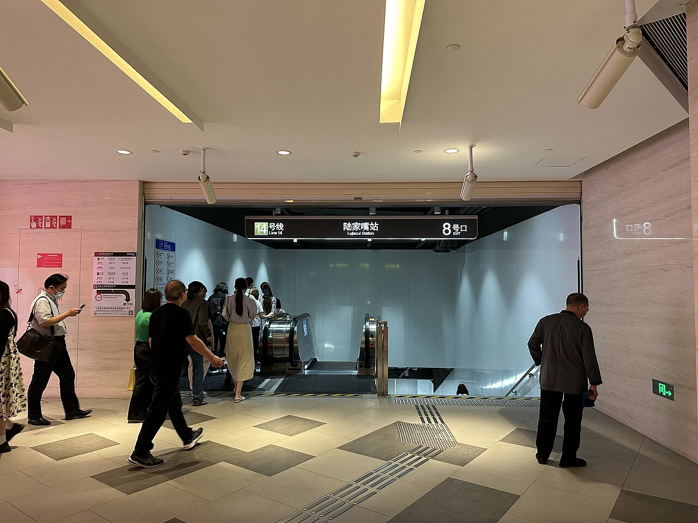
출발 · 토 09:00
IFC · 루자쭈이역
陆家嘴站 · 上海国金中心
숙소 IFC 레지던스 지하의 IFC 몰은 메트로 2호선 루자쭈이역과 바로 이어져 있다. 비가 와도 우산 없이 지하철을 탈 수 있다.
오늘 오전은 강 건너편 — 1920년대의 상하이로 간다. 2호선으로 딱 한 정거장, 황푸강 밑을 3분 만에 지나면 1회차에서 본 조계의 한가운데다. 강 위로 건너고 싶다면 남쪽 둥창루 부두에서 2元 페리를 타는 방법도 있다(도보 15분 + 배 5분).
출발 전 체크: 여권(위위안·임시정부 입장에 필요할 수 있다), 컨택트리스 신용카드 또는 알리페이, 보조배터리, 편한 신발.
↓메트로 1정거장2호선 루자쭈이 → 난징둥루(南京东路). 3分, 3元. 역에서 나오면 바로 보행가 동쪽 구간이다.
A2
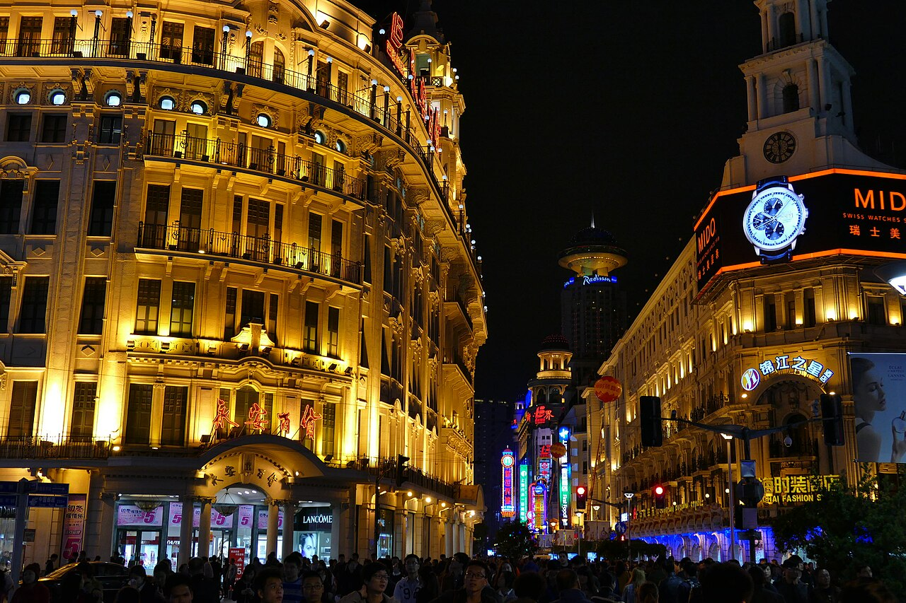
09:15 · 머무는 시간 약 20분
난징동루 보행가
南京东路步行街
"중화 상업 제일가(中华商业第一街)". 1851년 영국 조계가 경마장으로 가는 길로 닦은 Park Lane이 시작이다. 상하이 사람들은 오랫동안 이 길을 그냥 "큰길(大马路)"이라고 불렀다.
1917–1936년 사이 이 거리에 중국 최초의 근대 백화점 네 곳 — 셴스(先施)·융안(永安)·신신(新新)·다신(大新) — 이 차례로 문을 열었다. 에스컬레이터, 옥상 정원, 네온사인을 중국에서 처음 본 곳이 여기다. 1회차에서 본 1930년대 사진 속 간판 숲이 바로 이 거리다.
1999년 차 없는 보행가가 되었다. 토요일 오전 10시 전이라면 가게는 아직 문을 열지 않았지만 — 그래서 오히려 — 건물 윗부분의 1920–30년대 파사드가 잘 보인다. 고개를 들고 걸을 것.
↓도보 8분보행가를 따라 동쪽(강 쪽)으로 약 600m. 거리 끝에 초록색 피라미드 지붕이 보이면 다음 정거장.
A3
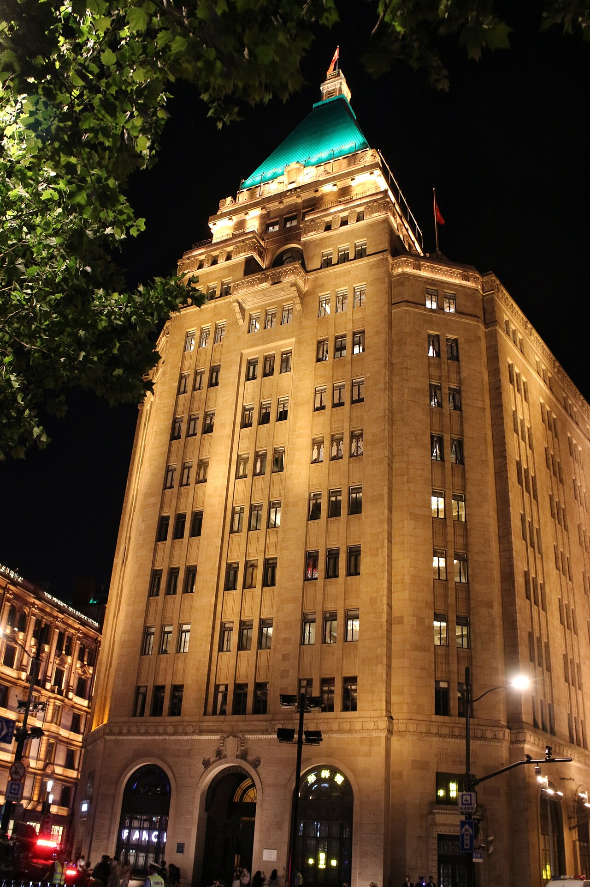
09:45 · 머무는 시간 약 15분
페어몬트 피스 호텔 (화평반점)
和平饭店
난징루와 와이탄이 만나는 모서리. 녹색 동판 피라미드 지붕이 얹힌 이 건물은 1929년 완공된 사순 하우스(Sassoon House)다. 바그다드 출신 유대계 거상 가문의 빅터 사순이 세웠고, 위층의 캐세이 호텔(Cathay Hotel)은 "동양 최고의 호텔"로 불렸다. 찰리 채플린, 노엘 카워드가 묵었다.
와이탄의 건물 대부분이 신고전주의 석조인 데 비해 이 건물은 아르데코다. 상하이가 가장 뜨거웠던 1930년대의 얼굴. 2회차에서 본 "상하이 모던"이 한 건물에 응축되어 있다.
1956년 "화평(和平)반점"이라는 이름을 얻었고, 지금은 페어몬트 피스 호텔로 운영된다. 길 건너 남쪽의 붉은 벽돌 건물(화평반점 남루)은 1908년의 옛 팰리스 호텔.
관광 팁: 1층 로비의 아르데코 장식은 투숙객이 아니어도 조용히 둘러볼 수 있다. 저녁의 재즈 바에서는 1980년대부터 이어진 노인 재즈 밴드 공연이 유명하다(코스 B 야경과 묶을 수 있다).
↓도보 7분와이탄 길(中山东一路)을 따라 북쪽으로 약 500m. 강과 쑤저우허(苏州河)가 만나는 자리의 철교가 목적지.
A4
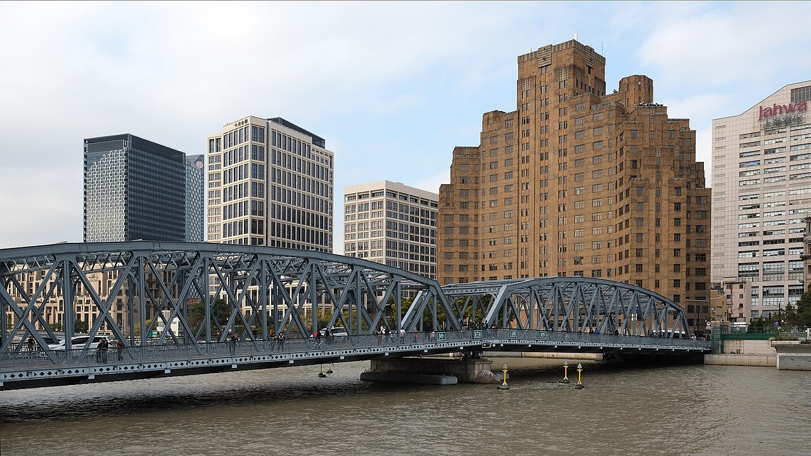
10:05 · 머무는 시간 약 20분
외백도교 · 와이탄위안
外白渡桥 · 外滩源
1907년 개통한 중국 최초의 전강(全鋼) 트러스 다리. 영어 이름은 Garden Bridge. 이전의 나무 다리는 통행료를 받았는데, 이 다리부터 무료가 되어 "건너는(渡) 데 공짜(白)"라는 이름이 붙었다는 설이 널리 알려져 있다.
다리 남쪽 모퉁이의 작은 공원이 황푸공원 — 1868년 조계의 퍼블릭 가든. 1928년까지 중국인의 출입을 막았다. "개와 중국인 출입 금지"라는 문구의 팻말이 실제로 그 문장 그대로 걸렸는지는 논쟁이 있지만, 규정 자체는 실재했다. 중국인이 이 도시의 조계 시대를 어떻게 기억하는지가 이 모퉁이에 있다.
다리 건너 북쪽의 갈색 벽돌 고층은 1934년의 브로드웨이 맨션(上海大厦). 다리 남서쪽 블록 — 와이탄위안(外滩源) — 에는 1873년의 옛 영국 영사관과 조계 초기 건물들이 정원과 함께 복원되어 있다.
사진 팁: 다리 위에서 남쪽을 보면 와이탄 건물 줄과 맞은편 루자쭈이가 한 화면에 들어온다.
↓도보 8분강변 제방 위(观景平台)로 올라가 남쪽으로 약 600m. 왼쪽이 황푸강과 푸동, 오른쪽이 와이탄 건물 줄.
A5
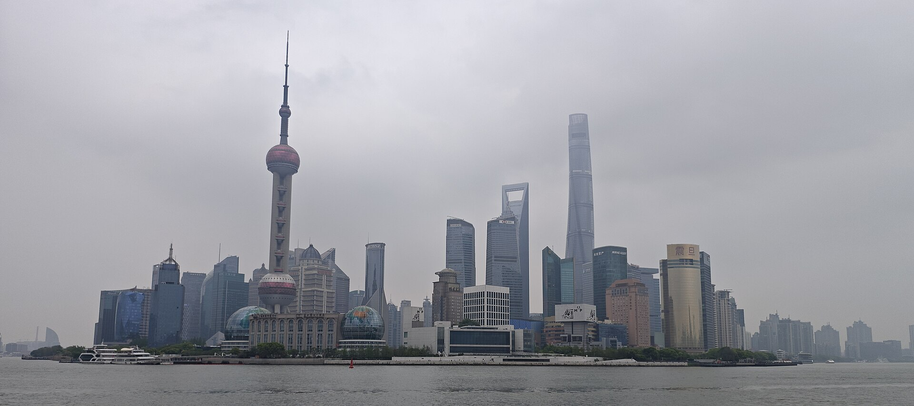
10:35 · 머무는 시간 약 20분
와이탄 강변 전망대
外滩观景平台
"와이탄(外滩)"은 "바깥 강변" — 옛 현성 바깥의 진흙 강기슭이라는 뜻이다. 영어 Bund는 힌디어의 둑(band)에서 왔다. 1843년 개항 후 영국 상인들이 이 강기슭을 사들여 제방을 쌓고 창고를 지은 것이 시작.
강을 따라 약 1.5km, 1900–1930년대에 세워진 52동의 건물이 줄지어 있어 "만국건축박람회"라 부른다. 네오클래식·바로크·아르데코·고딕이 한 줄에 섰다. 2회차 Beat 1에서 하나씩 짚은 그 줄이다.
그리고 강 건너편 — 오늘 아침 떠나온 루자쭈이. 한쪽 강변은 1920년대, 다른 쪽은 2020년대. 1회차 오프닝의 한 문장이 눈앞에 펼쳐진다. 30여 년 전까지 저쪽은 창고와 논밭이었다.
사진 팁: 와이탄 건물들은 동쪽(강)을 향하고 있어 오전에 순광이다. 건물 사진은 지금, 푸동 스카이라인 사진은 오후나 밤이 좋다. 난징루 끝의 동상은 1949년 이후 첫 상하이 시장 천이(陈毅).
↓도보 5분제방을 따라 남쪽으로 약 300m 내려가 길 건너편, 돔 지붕 건물과 시계탑 건물 앞.
A6
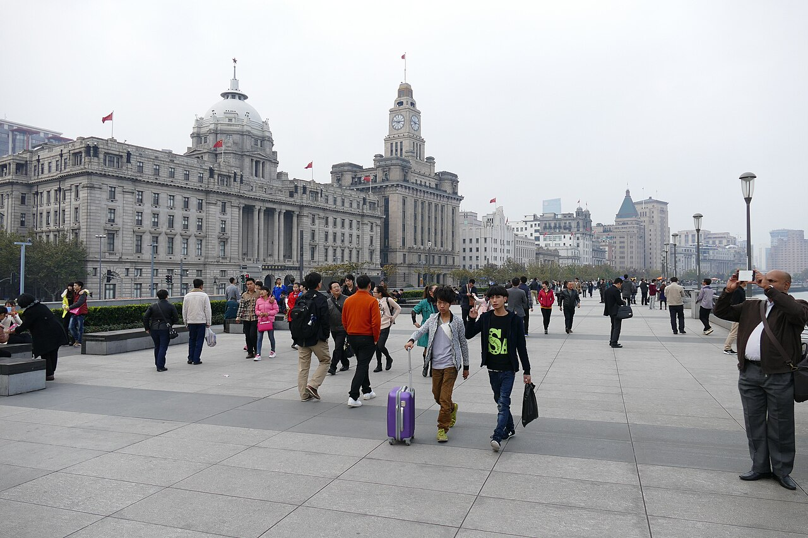
11:00 · 머무는 시간 약 20분
옛 HSBC 빌딩 · 세관 시계탑
前汇丰银行大楼 · 江海关大楼
와이탄 12호, 거대한 돔을 얹은 건물이 1923년의 HSBC(홍콩상하이은행) 상하이 본점. 완공 당시 "수에즈 운하에서 베링 해협까지 가장 아름다운 건물"이라는 평을 들었다. 입구 한 쌍의 청동 사자는 상하이 사람들이 쓰다듬으면 돈이 들어온다고 믿던 사자(지금 것은 복제품).
로비 팔각 돔 천장에는 상하이·홍콩·런던·뉴욕 등 당시 HSBC가 있던 8개 도시를 그린 모자이크가 있다. 1949년 이후 시 정부 청사로 쓰이며 회칠로 덮였다가 1997년 보수 때 다시 드러났다.
바로 옆 13호가 1927년 세관(江海关) 시계탑. 런던 빅벤을 본뜬 종이 매시간 울린다. 조계 시절엔 웨스트민스터 차임이, 문화대혁명 때는 "동방홍"이 흘러나왔다 — 시계탑의 선곡이 곧 이 도시의 정치사다.
관광 팁: 12호는 현재 푸둥발전은행(浦发银行). 영업시간 중 로비 입장이 허용될 때가 있으나 주말엔 닫혀 있을 수 있다. 내부 촬영은 금지.
↓도보 2분옛 HSBC 빌딩 남쪽 모퉁이에서 福州路로 들어가 서쪽으로 약 120m. 길 북쪽(오른편)에 식당 간판.
A7
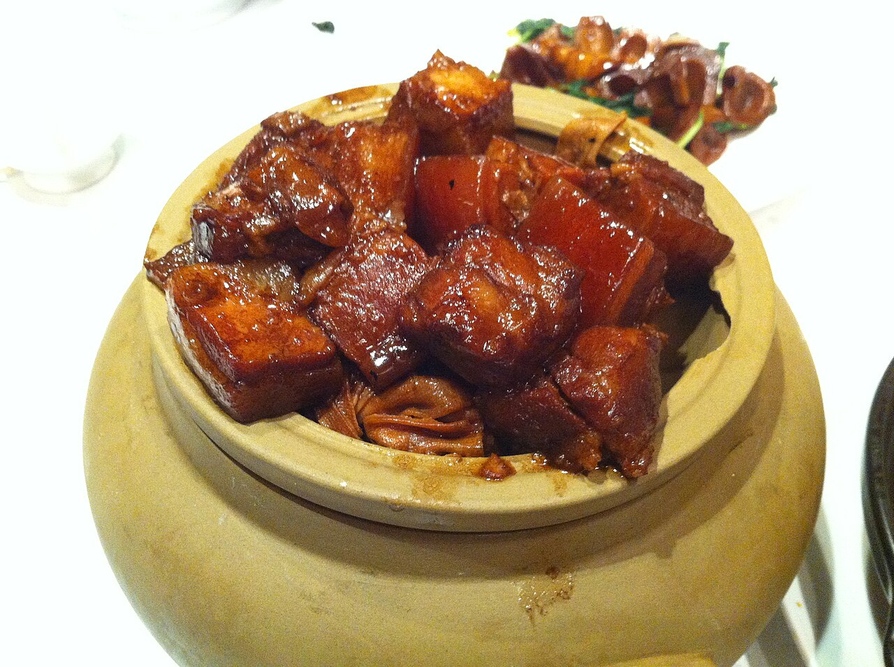
11:25 · 머무는 시간 약 50분 (점심)
상하이 그랜드마더 — 점심
上海姥姥家常饭馆
옛 HSBC 빌딩 남쪽 담을 따라 난 福州路로 120m. 영어 이름 Shanghai Grandmother, 중국어로는 상하이 라오라오(上海姥姥) — "상하이 할머니"의 집밥이라는 뜻이다. 와이탄에서 가장 가까운 본방채(本帮菜) 식당 중 하나로, 20년 넘게 현지인과 여행자가 섞여 앉는 곳.
3회차 Beat 3에서 본 "농유적장" 그대로의 밥상이다. 대표 메뉴는 훙사오러우(红烧肉) — 달고 짭짤하게 졸인 삼겹살. 여기에 간장 가지볶음, 마늘 시금치 같은 채소 하나와 흰밥이면 상하이 가정식 한 끼가 된다. 메뉴판에 영어와 사진이 있어 주문이 쉽다.
이용 팁: 점심은 11시 전후부터, 오후엔 브레이크타임(대략 14–17시)이 있다는 안내가 있으니 14시 전에 들어갈 것. 토요일 12시가 가까워지면 줄이 생기니 11시대 초반이 좋다. 2인 기준 150–250元 선. 알리페이 결제.
샤오롱바오는? 원조 계보인 난샹 만두점은 다음 정거장(구곡교) 앞에 있다. 여기서 배를 가득 채우지 말고, 게살 샤오롱바오 한 판을 간식으로 남겨 둘 것.
↓도보 18분福州路에서 四川中路를 따라 남쪽으로, 延安东路를 건너 人民路에서 옛 현성 안으로. 약 1.3km. 다리가 힘들면 10호선 난징둥루 → 위위안(1정거장)도 가능.
A8
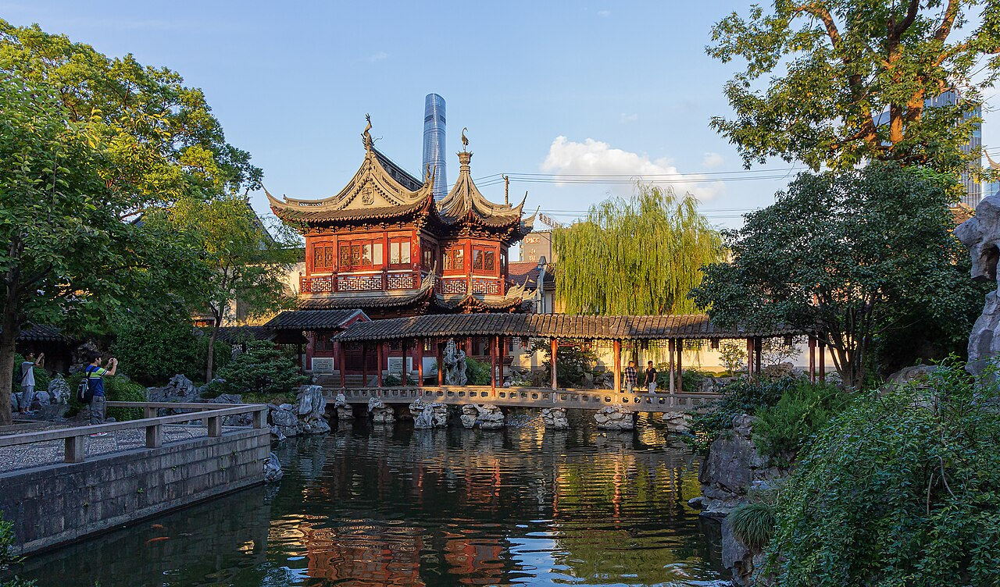
12:35 · 머무는 시간 약 20분 (간식)
구곡교 · 후신팅 · 난샹 만두점
九曲桥 · 湖心亭 · 南翔馒头店
여기서부터가 상하이의 옛 현성(县城) — 1553년 왜구를 막으려고 쌓은 둥근 성벽 안이다. 1회차에서 본 그 성벽은 1912년 헐려 지금의 人民路·中华路 순환도로가 되었다. 조계의 격자 도시와 달리 골목이 구불구불한 이유다.
연못 한가운데 두 층짜리 누각이 후신팅(湖心亭). 1784년 상인들이 지은 정자가 1855년 찻집이 되었다. 상하이에서 가장 오래된 찻집 중 하나. 그 앞을 지그재그로 꺾이는 구곡교(九曲桥)는 "귀신은 직진만 할 수 있다"는 속설을 따른다.
간식 추천:
난샹 만두점(南翔馒头店) — 1900년 창업, 3회차에서 본 샤오롱바오의 원조 계보. 점심은 그랜드마더에서 먹었으니 1층 테이크아웃 창구에서 한 판만. 게살 샤오롱바오(蟹粉)가 명물 — 11월 하순은 털게 제철 한가운데라 이때 먹을 가치가 있다.
후신팅 찻집 — 창가 자리에서 롱징차 한 주전자. 찻값이 비싼 편이지만 자리값이다.
주의: 이 일대는 상하이에서 가장 붐비는 관광지다. 토요일 정오는 인파 최고조. 소지품 주의, 호객(차 시음·마사지 권유)은 웃으며 지나칠 것.
↓도보 3분구곡교를 건너 북쪽 — 정원 매표소(豫园 售票处)로.
A9
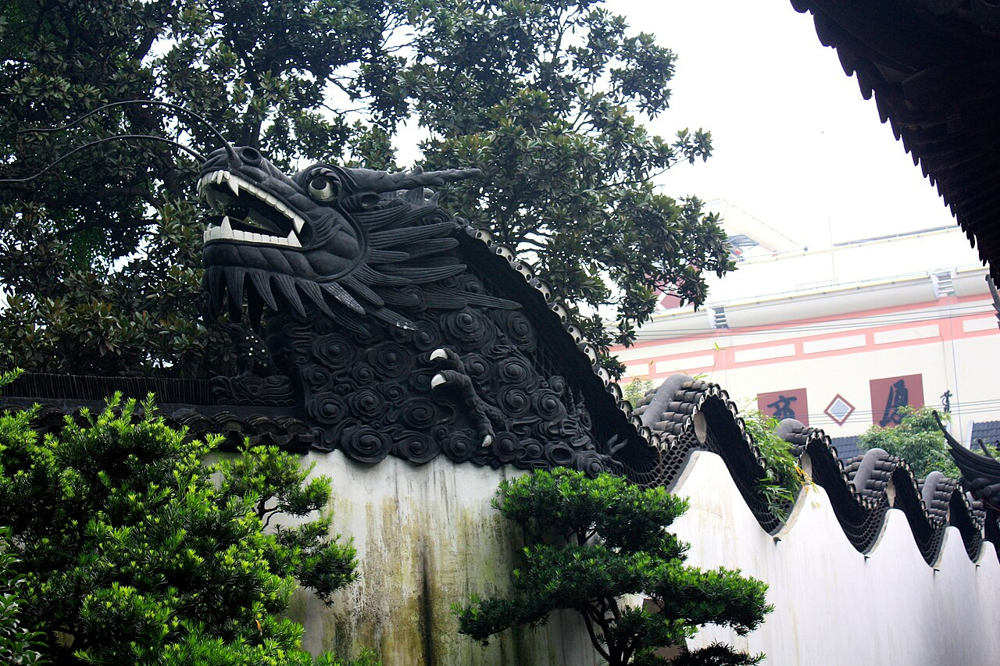
12:55 · 머무는 시간 약 60분
위위안 정원
豫园
1559년 명나라 관료 판윈돤(潘允端)이 늙은 부모를 기쁘게 해드리려고(豫悦老亲) 짓기 시작해 18년 만에 완성한 강남 정원. 이름의 "豫"가 "기쁘게 하다"라는 뜻이다. 약 2만㎡ — 쑤저우의 유명 정원들에 견주는 규모.
볼 것 세 가지: ① 대가산(大假山) — 명대 조원가 장난양(张南阳)이 쌓은 2,000톤짜리 인공 돌산. ② 옥영롱(玉玲珑) — 72개의 구멍이 뚫린 태호석. 아래서 향을 피우면 모든 구멍에서 연기가 난다고 한다. ③ 용벽 — 담장 위를 따라 달리는 흙 용. 사진 속 그 담장.
평화로운 정원만은 아니다. 1842년 아편전쟁 때 영국군이 이 정원에 주둔했고, 1853년에는 반청 비밀결사 소도회(小刀会)가 정원 안 점춘당(点春堂)을 본부로 삼아 상하이 현성을 1년 반 동안 점령했다. 그 혼란을 피해 수만 명의 중국인이 조계로 몰려 들어간 것이 — 1회차 Beat 3의 — 화양잡거(华洋杂居)의 시작이다.
관광 팁: 입장 40元(11월은 성수기 요금). 09:00–16:30(16:00 입장 마감), 월요일 휴관. 여권 지참. 정원이 미로처럼 이어지니 한 바퀴 60분은 잡을 것.
↓도보 3분정원 출구로 나와 남쪽 方浜中路 방향. 상가 골목 사이 붉은 사당 지붕이 보인다.
A10 · 종착
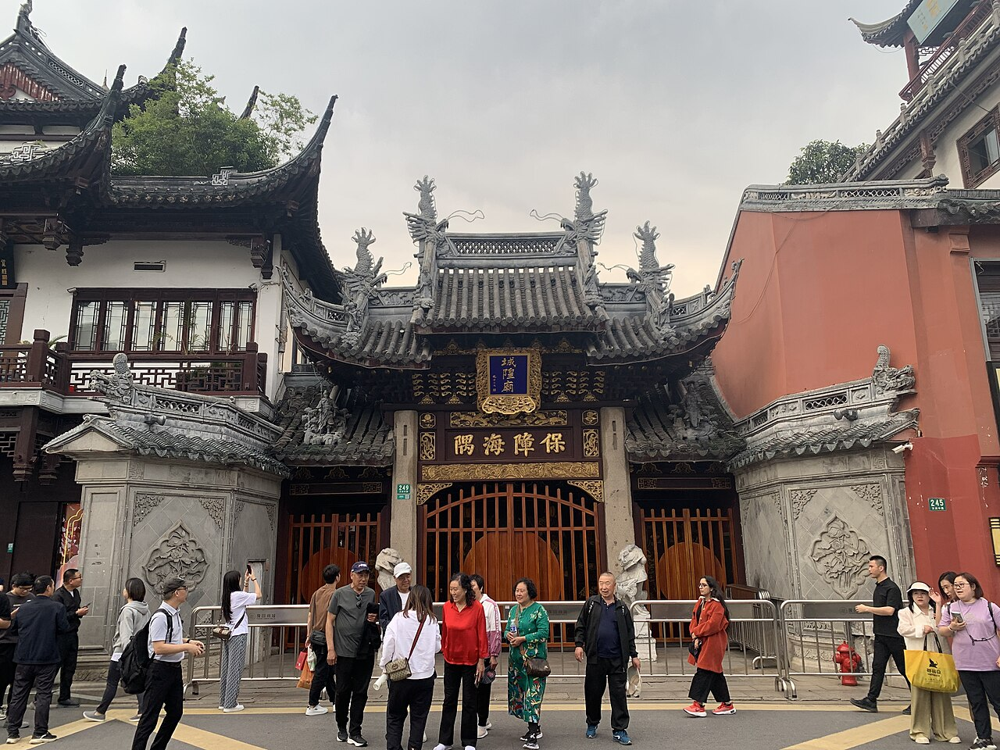
14:00 · 머무는 시간 약 15분
성황묘 → 코스 B로
上海城隍庙
도시의 수호신(城隍)을 모시는 도교 사당. 명 영락 연간(15세기 초)에 지금의 형태가 되었다. 모시는 신은 원말명초의 실존 인물 친위보(秦裕伯) — 명 태조 주원장이 사후 상하이의 수호신으로 봉했다.
"성황묘에 안 가보면 상하이에 안 온 것"이라는 옛말처럼, 위위안 상가 전체가 원래 이 사당 앞의 장터(庙市)에서 자랐다. 사당이 먼저, 시장이 나중이다. 입장 약 10元.
여기서 코스 A가 끝난다. 서쪽으로 도보 7분, 10호선 위위안역(豫园站)에서 홍차오 방면으로 두 정거장이면 신천지역 — 코스 B의 첫 정거장인 임시정부 청사까지 도보 5분. 임시정부 청사는 11:30–13:30 점심 휴관이니 14시 반 전후 도착이 딱 맞다.
B
코스 B — 옛 프랑스 조계
토 14:30–밤
망명객들의 동네. 좁은 석고문 계단에서 시작해 플라타너스 길을 지나, 양꼬치 한 상을 거쳐 숙소 건물 58층에서 강 건너 불빛으로 하루를 닫는다. 도보 약 6km + 디디 1회 + 메트로 1회. 일몰(16:53)은 톈즈팡에서 맞는다.
B1
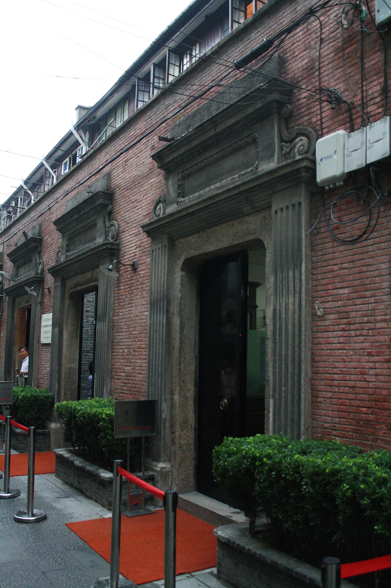
출발 · 토 14:30 · 머무는 시간 약 35분
대한민국 임시정부 청사
大韩民国临时政府旧址
10호선 신천지역에서 마당루(马当路)를 따라 남쪽으로 5분. 골목 306롱(弄) 4호, 붉은 벽돌과 검은 대문의 3층 석고문 연립주택 — 1926년부터 1932년까지 대한민국 임시정부가 청사로 쓴 집이다.
1919년 4월 상하이에서 수립된 임시정부는 13년 동안 프랑스 조계 안에서 여러 번 이사했다. 집세를 내지 못해 쫓겨나기도 했다. 그 여러 자리 중 원래 모습으로 남아 있는 곳이 여기뿐이다. 2회차 Beat 3에서 본 이야기 — 왜 하필 프랑스 조계였는가(일본 경찰이 함부로 들어올 수 없던 치외법권)가 이 골목에서 실감난다.
1층은 회의실과 부엌, 2층은 김구의 집무실, 3층은 요원들의 숙소. 믿기 어려울 만큼 좁다. 1932년 4월 29일 윤봉길 의거 직후 일본의 대대적인 수색이 시작되자 임시정부는 이 집을 떠나 항저우로 옮겨 갔다. 1992년 한중 수교 이듬해에 복원·개관했다.
관람 정보: 입장 20元. 09:00–11:30 / 13:30–17:00(오전 11:00, 오후 16:30 매표 마감) — 점심시간 휴관에 주의. 여권 지참. 내부 촬영은 제한되는 구역이 있으니 안내를 따를 것.
↓도보 5분마당루로 나와 북쪽으로 올라가 兴业路에서 오른쪽. 약 350m. 같은 석고문 벽돌 건물이 줄지어 선 블록이 나온다.
B2
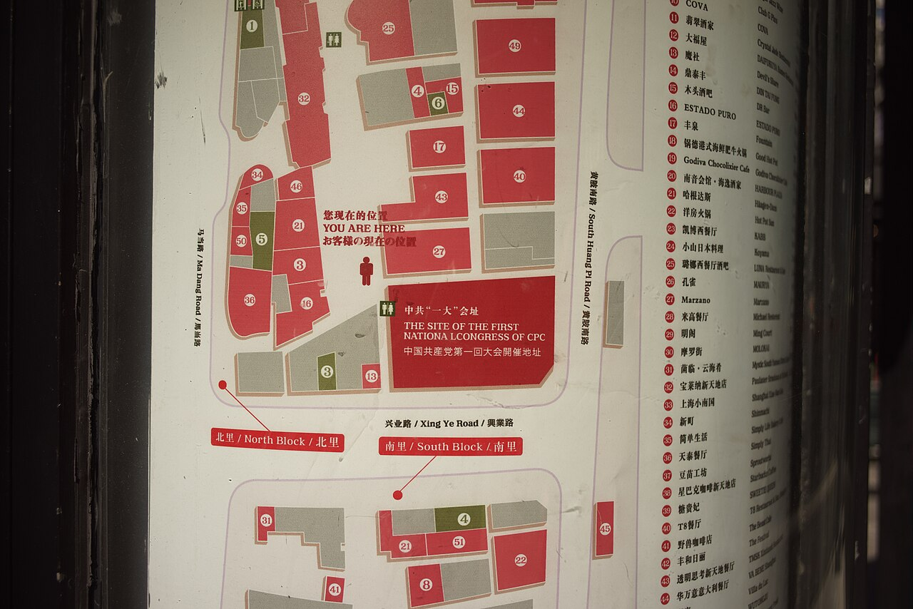
15:10 · 머무는 시간 약 20분 (선택)
중국공산당 제1차 대회 기념관
中共一大纪念馆
1921년 7월 23일, 이 석고문 집(당시 주소 望志路 106호)에 전국에서 모인 13명의 대표와 코민테른 대표 2명이 앉았다. 중국공산당 창당 대회다. 회의 도중 프랑스 조계 경찰이 들이닥치자 대표들은 흩어졌고, 마지막 날 회의는 저장성 자싱(嘉兴) 호수 위의 배에서 끝냈다.
방금 본 임시정부 청사에서 불과 350m. 같은 조계, 같은 석고문 골목에서 불과 2년 차이로 — 한국의 임시정부와 중국공산당이 각각 시작되었다. 둘 다 프랑스 조계의 치외법권을 방패로 삼았다. 2회차에서 강조한 "조계라는 틈"이 무엇이었는지를 보여주는 두 집.
2021년 창당 100주년에 옆 부지로 새 기념관이 확장 개관했다. 중국 현대사를 공식 서사로 보는 곳이라는 점도 알고 들어갈 것.
관람 정보: 무료, 실명 사전 예약(위챗 미니프로그램 "中共一大纪念馆", 여권번호). 09:00–17:00, 월요일 휴관. 예약이 번거로우면 외관만 보고 지나가도 충분하다.
↓도보 3분기념관 바로 북쪽·동쪽 블록이 신천지. 골목 안 광장으로.
B3
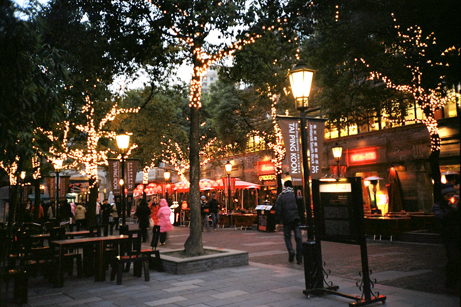
15:35 · 머무는 시간 약 25분 (카페 휴식)
신천지
新天地
1920년대 석고문 주거 블록 두 개를 — 외벽과 골목 구조만 남기고 — 식당·카페·부티크로 바꾼 곳. 1999–2001년 홍콩 슈이온(瑞安) 그룹과 미국 건축가 벤저민 우드가 진행했다. "새로운 하늘과 땅(新天地)"이라는 이름 그대로 상하이 도시재생의 상징이 되었다.
동시에 논쟁의 상징이기도 하다. 원래 이 골목에 살던 수천 가구는 모두 이주했고, 벽돌 상당수는 새로 구운 것이다. "보존인가, 석고문 모양의 테마파크인가." 2회차 Beat 2의 질문을 들고 걸어볼 것 — 방금 본 임시정부 골목(아직 사람이 사는 석고문)과 비교하면 답이 잘 보인다.
휴식 팁: 오후의 절반이 지났다. 여기서 커피 한 잔. 북리(北里)는 고급 레스토랑, 남리(南里)는 쇼핑몰 쪽. 화장실은 쇼핑몰 안이 편하다.
↓도보 12분兴业路를 따라 서쪽으로 약 800m. 큰길 重庆南路를 건너면 플라타너스 숲이 짙은 공원이 나온다.
B4
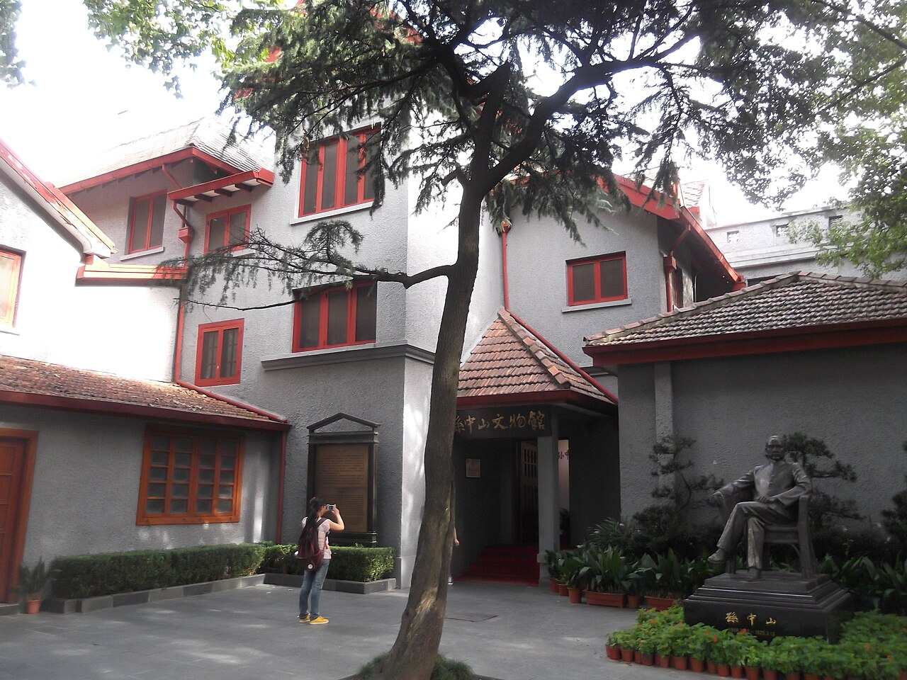
16:05 · 머무는 시간 약 30분
푸싱공원 · 쓰난루
复兴公园 · 思南路
푸싱공원(复兴公园)은 1909년 프랑스 조계가 만든 Parc de Koukaza. 상하이에 몇 남지 않은 프랑스식 정형 정원이다. 주말 오후엔 춤추는 노인들, 카드놀이 하는 사람들 — 상하이 사람들의 일상이 가장 잘 보이는 곳 중 하나. 11월 하순이면 공원과 쓰난루의 플라타너스가 노랗게 물들어 있다 — 이날 단풍을 해 있을 때 보는 마지막 구간이니 천천히.
공원 서쪽 담을 따라 이어지는 길이 쓰난루(思南路). 1920년대 가든 빌라가 줄지어 서 있다. 모퉁이 香山路 7호가 쑨원(孙中山) 고거 — 1918–1924년 쑹칭링과 살던 회색 벽 양옥이다. 조금 남쪽 思南路 73호는 1946년 국공 협상 때 저우언라이가 머문 저우공관(周公馆).
한 동네에 중화민국의 국부, 중국공산당의 2인자, 그리고 한국의 임시정부가 이웃해 있었다. 프랑스 조계는 20세기 동아시아 망명객들의 동네였다.
관광 팁: 쑨원 고거는 입장 약 20元, 월요일 휴관. 시간이 빠듯하면 외관과 정원만. 남쪽의 쓰난공관(思南公馆)은 1920–30년대 빌라 51동을 복원한 단지로, 산책만으로도 좋다.
↓도보 12분쓰난루를 따라 남쪽으로 끝까지, 建国中路에서 서쪽으로 약 200m. 泰康路 210弄 골목 입구가 톈즈팡.
B5
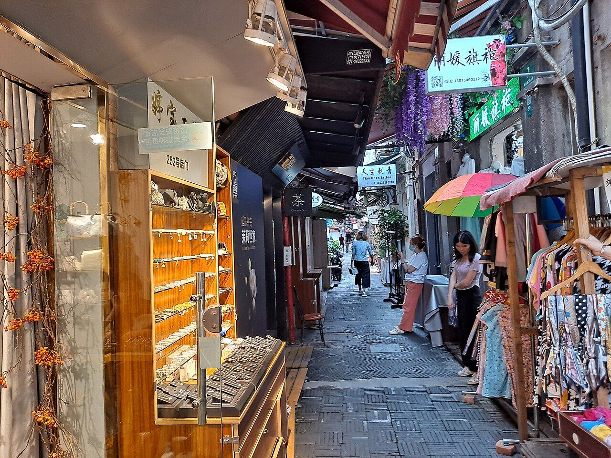
16:45 · 머무는 시간 약 40분 (일몰 16:53)
톈즈팡
田子坊
신천지가 "위에서 설계된" 석고문 재생이라면, 톈즈팡은 "아래에서 자란" 쪽이다. 1998년 화가 천이페이(陈逸飞)가 폐공장에 작업실을 내면서 예술가들이 모였고, 이어 골목 주민들이 1층을 가게로 세놓기 시작했다. 철거 계획이 있었지만 주민·예술가들의 반대로 살아남았다.
그래서 지금도 2층 창문에는 빨래가 널려 있고, 1층은 카페·공방·기념품 가게다. 사람이 사는 석고문 골목을 걸어볼 수 있는 몇 안 되는 곳. 골목이 미로처럼 얽혀 있어 일부러 길을 잃어보는 것도 방법이다.
이름은 중국 옛 화가 "田子方"의 이름에 음을 맞춰 화가 황융위(黄永玉)가 지었다고 한다.
관광 팁: 11월 하순의 일몰은 16:53 — 골목을 걷는 사이 해가 지고 처마 끝 등이 켜진다. 저녁이 가까워지면 붐빈다. 주민의 집 안을 들여다보거나 문 앞에서 사진 찍는 것은 삼갈 것. 간식으로 꼬치·밀크티 정도.
↓디디 약 15–20분약 3.5km 서쪽. 걸으면 40분이라 디디·택시 권장(약 20–30元). 목적지는 武康大楼(淮海中路 1850号). 가장 가까운 메트로는 9호선 다푸차오(打浦桥)역이지만 환승이 번거롭다.
B6
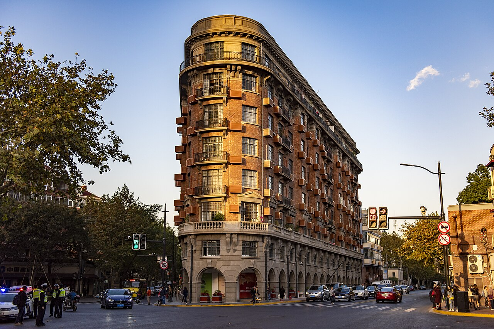
17:45 · 머무는 시간 약 15분
우캉 맨션
武康大楼
다섯 갈래 길이 만나는 교차로에 뱃머리처럼 솟은 8층 건물. 1924년 완공된 노르망디 아파트(Normandie Apartments). 설계자는 헝가리 출신 건축가 라슬로 후데크(László Hudec) — 1차 대전 중 러시아 포로수용소에서 탈출해 상하이로 흘러들어와 조계 최고의 건축가가 된 인물이다. 뉴욕의 플랫아이언 빌딩을 떠올리게 하는 삼각형 평면.
조계 시절엔 외국인 고위층, 1949년 이후엔 배우·예술가들이 살았다. 1953년 "우캉 맨션"으로 이름이 바뀌었다. 지금은 상하이에서 가장 많이 사진 찍히는 건물 중 하나 — 2회차 Beat 4의 마지막 사진이 이 건물이다.
사진 팁: 이 시간엔 이미 해가 졌다(11월 하순 일몰 16:53). 건물 외벽 조명이 켜진 야경으로 보게 된다. 교차로 대각선 건너편 모퉁이에서 뱃머리가 정면으로 잡힌다. 차가 많은 교차로이니 횡단보도 신호를 꼭 지킬 것.
↓도보 5분우캉 맨션 옆으로 뻗은 武康路를 따라 북쪽으로. 플라타너스 터널이 시작된다.
B7
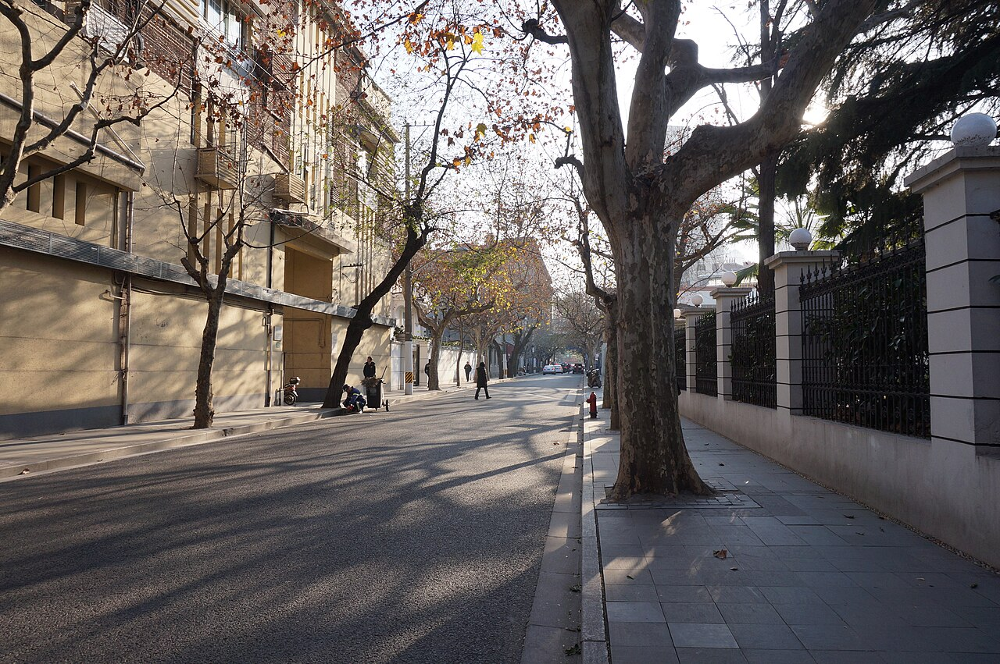
18:05 · 머무는 시간 약 30분
우캉루 · 안푸루
武康路 · 安福路
우캉루(武康路)는 1907년 조계가 닦은 페르거슨 로(Ferguson Road). 1.2km 남짓한 길 양쪽에 1920–30년대 서양식 주택 수십 채가 담장 너머로 서 있다. 머리 위를 덮은 가로수는 상하이 사람들이 "프랑스 오동(法国梧桐)"이라 부르는 플라타너스 — 조계가 남긴 가장 아름다운 유산이라는 말도 있다. 11월 하순은 이 길의 단풍 절정기. 밤이지만 가로등 아래 노란 잎이 깔린 길은 그 나름대로 좋다.
113호는 소설가 바진(巴金)이 1955년부터 2005년 세상을 떠날 때까지 산 집(기념관, 월요일 휴관). 문화대혁명의 고초를 겪은 뒤 이 집에서 반성의 산문집 수상록(随想录)을 썼다.
우캉루 북쪽 끝에서 동쪽으로 이어지는 안푸루(安福路)는 지금 상하이 젊은 세대가 가장 사랑하는 거리. 작은 카페·브런치·편집숍이 줄지어 있다. 3회차에서 본 "세계에서 카페가 가장 많은 도시" 상하이가 여기 있다.
저녁은 다음 정거장(양꼬치)에서. 여기서는 카페 한 곳에 들러 몸을 녹이는 정도로. 대기가 걱정되면 이쯤에서 대중점평 앱으로 양꼬치집 원격 번호표를 뽑아 둘 것.
↓도보 약 20분안푸루 동쪽 끝에서 长乐路를 따라 동쪽으로 약 1.5km, 陕西南路에서 남쪽으로 꺾는다. 플라타너스 길이 계속 이어진다. 힘들면 디디 10분.
B8
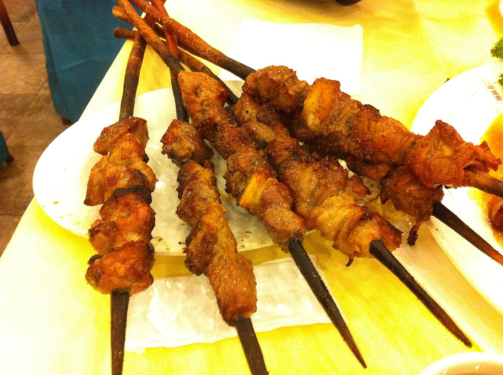
18:55 · 머무는 시간 약 60분 (저녁)
헌지우이치엔 양꼬치 — 저녁
很久以前羊肉串(陕西南路店)
很久以前(헌지우이치엔, "아주 먼 옛날") — 베이징에서 시작한 양꼬치 체인. 테이블마다 꼬치가 저절로 돌아가는 자동 회전 화로가 있어, 굽는 걸 신경 쓰지 않고 먹기만 하면 된다. 한국 여행자 사이에서 워낙 유명해 중국 언론이 "한국 인플루언서 관광객이 양꼬치를 상하이 명물로 만들었다"는 기사를 쓸 정도다.
이 지점은 陕西南路 141号 3층, 쇼핑몰 환마오(环贸 iapm) 맞은편. 오늘 동선(우캉루 → 와이탄 방향 10호선)에서 가장 가까운 지점이라 골랐다. 난징동루 본점(第一百货 6층)보다 덜 붐비는 편이다.
주문 팁: 기본 양꼬치(羊肉串)에 양갈비 꼬치, 구운 만터우, 가지구이 정도. 인당 70–120元. 메뉴판에 사진이 있고, 테이블 QR로 주문·결제하는 곳이 많다.
대기 팁: 16:30 오픈, 늦게까지 영업. 토요일 저녁은 줄이 길 수 있다 — 톈즈팡이나 우캉루에 있을 때 대중점평(大众点评) 앱에서 원격 번호표(排队取号)를 뽑아 두면 좋다. 20시 전에는 일어설 것(다음 정거장의 조명 소등 때문).
↓메트로 약 30분10호선 陕西南路역 → 난징둥루 환승 → 2호선 루자쭈이역(IFC 직결). 또는 디디로 약 20–25분(강 밑 터널 경유, 약 40–50元). 숙소 건물로 돌아가는 길이다.
B9 · 종착
20:25 · 머무는 시간 자유
Flair 루프톱 — 58층에서 보는 와이탄
FLAIR 上海浦东丽思卡尔顿酒店58楼
숙소 IFC 단지의 리츠칼튼 푸동 58층. 황푸강이 꺾이는 루자쭈이 끝에 있어, 강 건너 와이탄의 석조 건물 줄 전체와 바로 옆 동방명주가 한눈에 들어온다. 오늘 오전 걸었던 강변을 밤에, 위에서 다시 보는 자리 — 토요일의 마지막 정거장으로 이만한 곳이 없다.
왜 이 시간인가: 겨울철 와이탄·루자쭈이 경관 조명은 21–22시에 꺼진다. 20시 반 전후에 자리를 잡으면 불 켜진 와이탄을 한 시간 남짓 볼 수 있다. 조명이 꺼진 뒤에도 도시의 불빛은 남는다. 영업은 금·토 새벽 2시까지.
예약과 비용: 예약 시 2인 테이블 패키지가 붙는다 — 실내 1,680元부터, 테라스 이글루 2,288元부터(2026년 기준 안내). 토요일 밤은 미리 예약(리츠칼튼 공식 사이트·OpenTable)할 것. 11월 밤 테라스는 춥고 바람이 세니 이글루나 실내가 현실적이다. 만 18세 이상, 스마트 캐주얼(슬리퍼·민소매·남성 반바지 불가).
조명이 남아 있다면 — Flair 아래 강변 산책로(滨江大道)까지 도보 5분. 내일 아침 코스 C에서 다시 걷게 될 길이다. 여기서 토요일 — 그리고 코스 B — 가 끝난다.
C
코스 C — 루자쭈이
일 08:30–13:45
숙소 문 앞의 35년. 마지막 날 아침, 어제 걸은 강 건너를 이쪽에서 본다. 도보 약 3km, 점심 후 공항으로.
C1
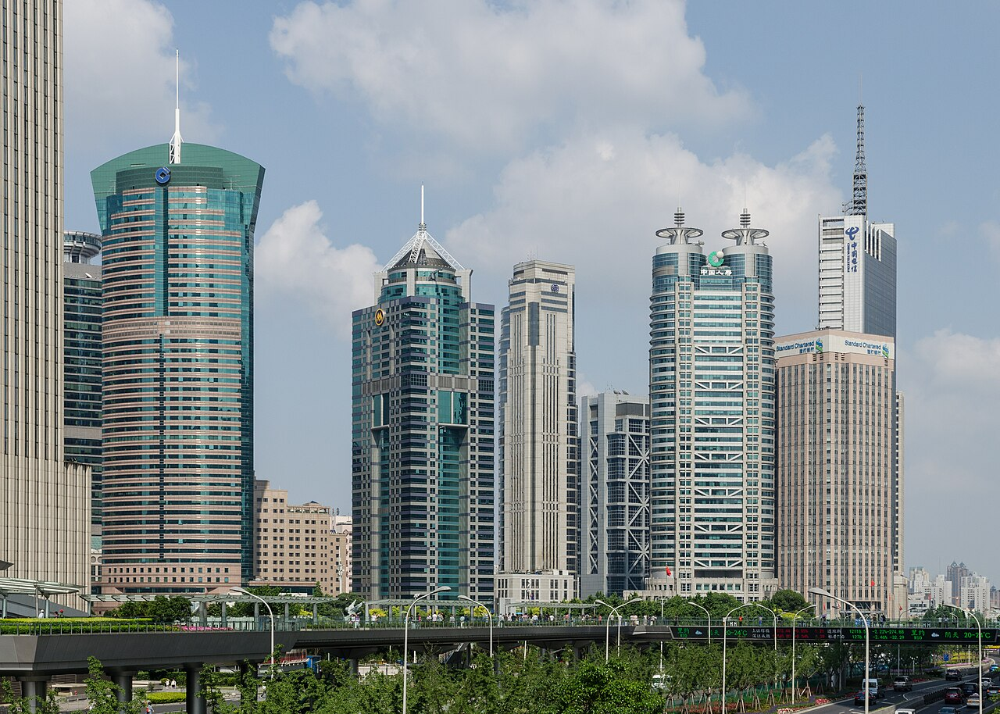
출발 · 일 08:30 · 머무는 시간 약 20분
루자쭈이 원형 육교
陆家嘴环形天桥
마지막 날 아침은 숙소 문 앞에서 시작한다. IFC에서 나와 한 블록, 세기대도(世纪大道)와 루자쭈이 순환로가 만나는 교차로 위를 동그랗게 감싸는 공중 보행교. 차도를 한 번도 건너지 않고 사방으로 갈 수 있게 만든 육교다.
이름부터 보자. 루자쭈이(陆家嘴) — "루(陆)씨 집안의 부리(嘴)". 황푸강이 크게 굽이치며 만든 뾰족한 모래톱에 명나라 학자 루선(陆深)의 집안 땅이 있었다. 1990년 개발 전까지 이곳은 조선소·창고·판잣집과 논밭이었다.
육교 위에서 한 바퀴 돌면 동방명주 · 진마오 · 상하이 세계금융센터 · 상하이타워가 차례로 보인다. 1회차 Beat 4에서 본 "30년 만에 생긴 도시"의 전체 그림.
↓도보 5분육교 북쪽 계단으로 내려가 분홍 구슬 탑 쪽으로.
C2
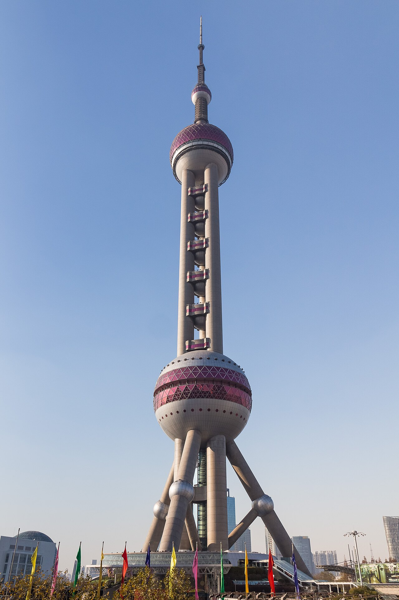
08:55 · 머무는 시간 약 15분
동방명주
东方明珠广播电视塔
1994년 완공된 468m 방송탑. 푸동 개발 선언(1990) 이후 처음 올라간 랜드마크이자, 그 뒤 30년 동안 "상하이" 하면 떠오르는 실루엣이 되었다.
크고 작은 구슬 11개를 꿴 디자인은 당나라 시인 백거이의 비파행 한 구절 — "큰 구슬 작은 구슬이 옥쟁반에 떨어지네(大珠小珠落玉盘)" — 에서 왔다고 설명된다. 맞은편 와이탄에서 보면 이 탑과 강 건너 양푸대교·난푸대교가 "두 마리 용이 구슬을 가지고 노는(二龙戏珠)" 구도가 된다.
관광 팁: 전망대도 있지만 이번 일정에서는 더 높은 상하이타워 하나만 오르는 것을 권한다. 탑은 외관과 발밑에서 올려다보는 것으로 충분하다.
↓도보 5분탑 서쪽으로 빠져 강변 산책로(滨江大道)로 내려간다. 강 건너 와이탄이 정면으로 보인다.
C3
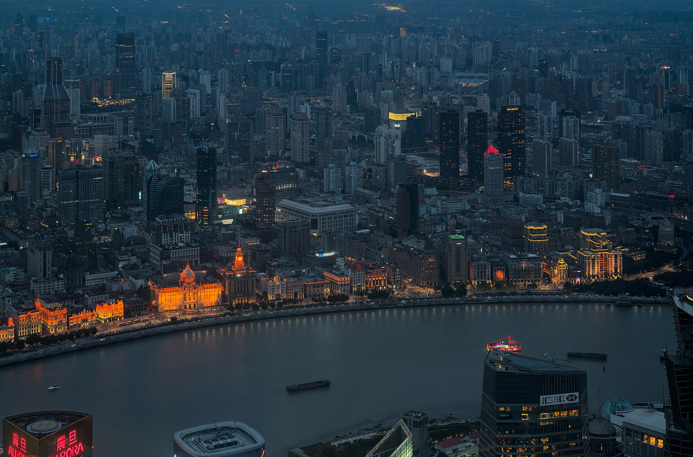
09:15 · 머무는 시간 약 30분
루자쭈이 강변 산책로
陆家嘴滨江大道
어제는 저쪽에서 이쪽을 봤다. 오늘은 이쪽에서 저쪽을 본다. 와이탄 건물들은 동쪽을 향해 서 있어서 푸동 강변에서 오전 햇빛을 정면으로 받는다 — 와이탄 전경을 가장 선명하게 찍을 수 있는 시간이 지금이다.
52동의 건물 중 어제 가까이서 본 건물을 찾아보자. 초록 피라미드 지붕(화평반점), 돔(옛 HSBC), 시계탑(세관). 가까이서 볼 때와 달리, 강 건너에서는 이 건물들이 하나의 벽처럼 보인다. 조계 시대 외국 상사들이 강을 따라 들어오는 배에 보여주고 싶었던 것이 바로 이 벽이었다.
강폭은 약 400m. 쉴 새 없이 지나가는 화물선은 상하이가 여전히 세계 최대 컨테이너 항구 도시라는 걸 보여준다.
↓도보 15분강변에서 동쪽 내륙으로 약 1km. 동방명주 옆을 지나 陆家嘴中心绿地(루자쭈이 중앙녹지) 잔디밭으로. 한가운데 오래된 벽돌집이 있다.
C4
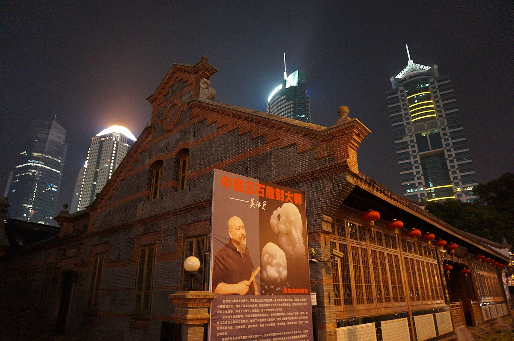
09:55 · 머무는 시간 약 20분
천구이춘 고택 · 중앙녹지
陈桂春住宅 · 陆家嘴中心绿地
초고층 숲 한가운데 홀로 남은 1910년대 저택. 황푸강 수운으로 돈을 번 사업가 천구이춘(陈桂春)이 지었다. 중국식 사합원 배치에 서양식 기둥과 창을 섞은 — 바로 조계 시대 상하이다운 — 절충 양식이다.
1990년대 이 일대를 밀어버리고 약 10만㎡의 중앙녹지를 만들 때, 이 집 한 채만 남겼다. 지금은 루자쭈이 개발 역사 전시관으로 쓰인다. 개발 이전 이 동네의 사진 — 판잣집, 나룻배, 논 — 과 지금의 풍경을 비교해볼 수 있는 곳.
1회차에서 던진 질문 — 30년 만에 무엇이 사라지고 무엇이 생겼나 — 에 대한 답이 이 한 채의 집에 있다.
관광 팁: 전시관은 무료로 운영되는 경우가 많다(운영 시간 현장 확인). 공원 벤치에서 잠깐 쉬어 가기 좋다.
↓도보 7분녹지 남쪽으로 나와 世纪大道를 건너면 세 개의 타워가 나란히 선 블록. 가장 높은 비틀린 타워의 지하 매표소로.
C5
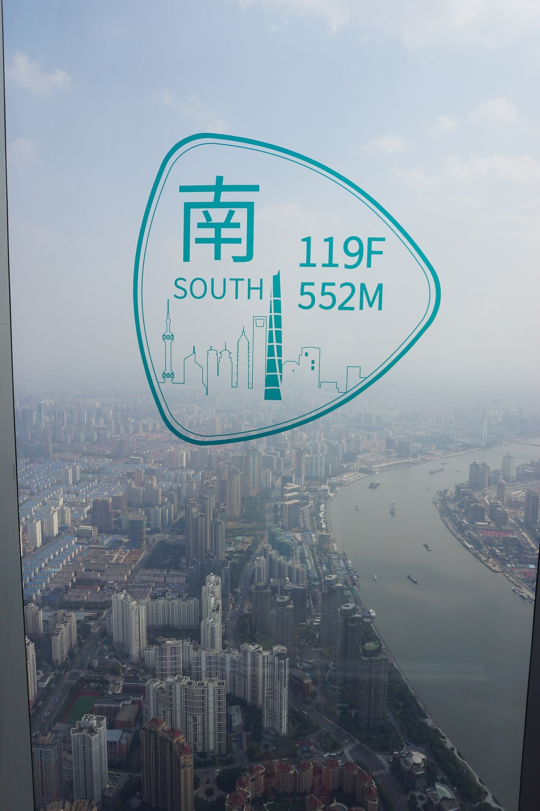
10:20 · 머무는 시간 약 70분
상하이타워 118층 전망대
上海中心大厦
632m, 2015년 완공. 중국에서 가장 높고 세계에서도 손꼽히는 높이의 건물. 아래에서 위로 올라가며 약 120도 비틀린 외형은 태풍의 바람 하중을 줄이기 위한 설계다. 유리 외피가 두 겹이고, 그 사이 공간에 구역마다 공중 정원이 있다.
나란히 선 세 타워는 푸동 30년의 세 세대다. 진마오(金茂, 1999, 420m) — 중국 탑(塔)을 본뜬 88층, 숫자 8에 대한 집착. 세계금융센터(SWFC, 2008, 492m) — "병따개". 꼭대기 구멍은 원래 원형이었지만 "일장기 같다"는 반발로 사다리꼴로 바뀌었다. 그리고 상하이타워(2015).
118층(546m) 전망대까지 초고속 엘리베이터로 약 1분. 발밑으로 어제 걸은 와이탄, 위위안 지붕들, 황푸강의 S자 굴곡이 전부 보인다. 2박 3일의 동선을 위에서 한 번에 복기하는 자리.
관람 정보: 118층 기본권 약 180元(층수 추가 옵션 있음). 08:30–22:00. 일요일 오전은 비교적 한산하다. 11월엔 안개·미세먼지로 시야가 짧은 날이 있으니 아침에 IFC 창밖으로 타워 꼭대기가 보이는지 확인하고 결정. 여권 지참.
↓도보 8분세기대도를 따라 서쪽으로 약 500m, IFC로 복귀. IFC 몰에서 점심 후 체크아웃.
C6 · 종착
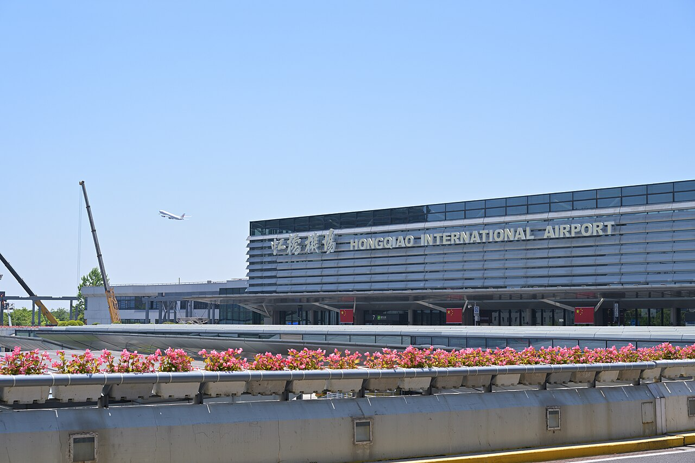
11:45 · 13:45 공항 출발
IFC → 훙차오 공항 1터미널
上海国金中心 → 虹桥机场T1
IFC 몰 지하·고층의 식당가에서 마지막 점심. 짐을 찾아 13:45 전후 출발하면 17:00 출국편에 여유 있게 맞는다(국제선은 2시간 전 도착 권장).
메트로(약 55분, 약 7元) — 루자쭈이역 2호선 → 난징둥루에서 10호선 환승 → 훙차오 1터미널(虹桥1号航站楼)역. 10호선은 어제 코스 A·B에서 탄 그 노선이다. 캐리어가 있다면 난징둥루 환승 통로가 길다는 것만 각오할 것. 택시·디디(45–70분, 약 100–130元) — 일요일 오후 고가도로 정체 변수 있음. 짐이 많거나 동행이 있으면 이쪽이 편하다.
주의: 한국행 국제선은 1터미널(T1)이다. 2호선이 서는 "2터미널(T2)"역에서 내리면 안 된다.
여기서 코스 C — 그리고 2박 3일의 상하이 — 가 마친다. 강 이쪽과 저쪽, 1920년대와 2020년대를 다 걸었다.
대안 코스 (일요일 오전, 코스 C 대신)+
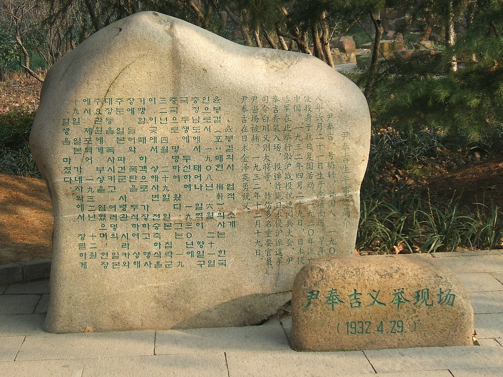
옵션 · 일 08:30–11:30
루쉰공원 — 옛 홍커우공원
鲁迅公园 · 梅轩
2회차 Beat 3의 그 자리. 1932년 4월 29일 윤봉길 의거의 현장이다. 공원 안에 윤봉길의 호를 딴 기념관 매헌(梅轩)이 있고, 같은 공원에 루쉰의 묘와 기념관이 있다. 한 공원이 한국의 독립운동가와 중국의 대문호를 함께 기억하는 곳.
숙소에서 북쪽으로 떨어져 있어 기본 일정에서는 뺐다. 임시정부 청사(코스 B)에서 시작된 이야기를 끝까지 따라가고 싶다면 코스 C 대신 이쪽으로. 루자쭈이에서 메트로·택시로 30–40분. 공원과 기념관에 1–2시간. 체력이 남는다면 인근 뒤룬루 문화거리(多伦路, 1930년대 좌익 작가들의 동네)와 묶을 수 있다.
관람 정보: 공원 무료. 매헌 기념관은 소액 입장료, 월요일 휴관 여부는 출발 전 확인. 일요일 13:45 공항 출발 시간을 역산해 11:30까지는 IFC로 돌아올 것.
투어를 마치며
네 회를 따라온 분들께. 첫 회의 큰 그림은 "한쪽 강변은 1920년대, 다른 쪽은 2020년대"였다. 둘째 회에서 그 1920년대의 거리를 채운 건물과 집과 사람들 — 그리고 좁은 석고문 계단 위의 한국 임시정부 — 를 봤고, 셋째 회에서 오늘의 상하이에서 먹고 결제하고 움직이는 법을 챙겼다.
오늘 — 넷째 회 — 우리는 그 모든 것을 이틀의 동선 위에 펼쳤다. 강 밑을 지나는 3분의 지하철이 70년을 건너게 해 준다는 것. 토요일 아침 난징동루역 계단을 올라서는 순간, 이 네 강의가 발밑의 한 걸음 한 걸음에 따라오기를.